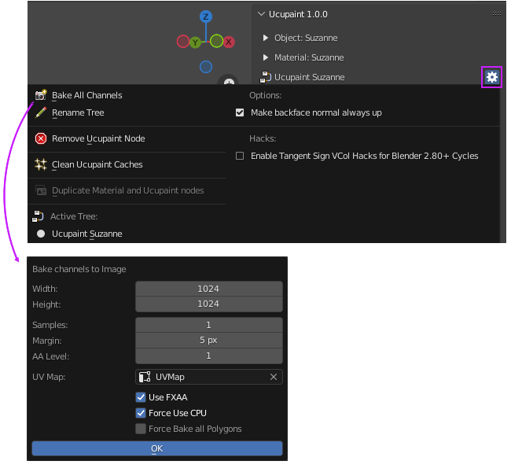
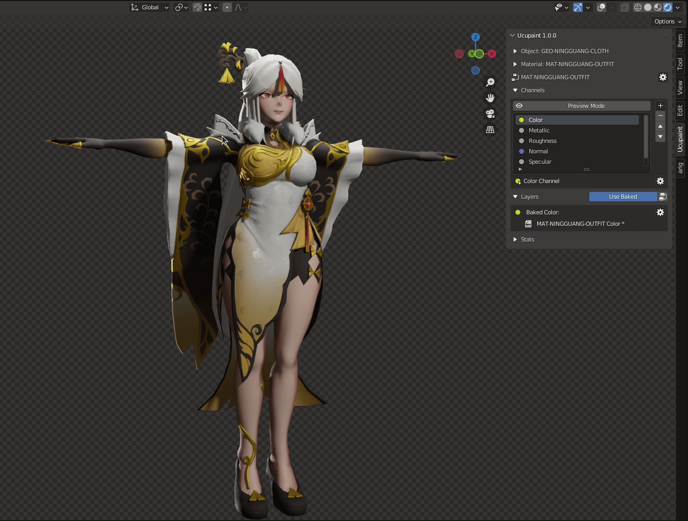

Bake Channels
Channel Baking the layer is important if your model will be used on other software. That's because other software can't read Blender node shader. Baking channel with Ucupaint is easy, you can go to the Ucupaint special menu. the location is on a gear icon under the Material Panel. Just click bake all channels and set the right configuration, then your baking process is working.
|  |
|---|
| Bake channels location |
The Baking process is a non-destructive workflow, you can still go back and edit your texture layer by layer using this toggle button.
|  |
|---|
| Toggle between using baked textures or not |